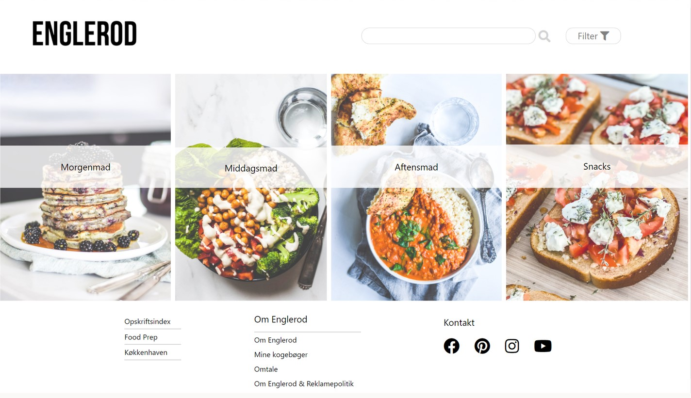

Back to cases
Englerod is an online recipe blog with plant
based food.
This project focused on a series of new things
that we had yet to try out - first of all, we
would have to choose between five planes of
UX and scrum for project management, instead
of just WBS and gantt-diagrams as previously.
We choose to work with scrum as seen further
down.
Other than that, we had to work with headless
CMS and API through Wordpress - this way we
should be able to sort and show posts that
were created through Wordpress.
You can use the tabs below to see the different steps i had a part to play in.
To start off this project I did a
categorization to get an idea of the
target audience. Here we found that
there was both a primary audience and
a secondary audience - the difference
between these two groups being primarily
their age.
After I found the target audience, we did
a series of interviews to learn more about
their motives and what they valued when
looking for recipes online. In these
interviews I could see a series of
repeating patterns amongst the interviewee's.
These were: adjusting recipes to
allergies/taste, using the vegetables of
the season, interest in pictures and an
indicator of how much time the recipes
demands of you as well a difficulty.
After this, I did a competitor analysis to
get a better idea of what might be lacking
from the site. The sites we used to compare
were pickuplimes.com, miasommer.org as well
as deliciouslyella.com.
For this project we worked with scrum for the first time. I primarily worked on creating the design for the website, which was created mobile first. I wanted the website to have a modern, simplistic and sleek look.
